Exercise 4: Computer Aided Design
Export F3D Model from SophiCar and Create Custom Parts in Fusion 360 with AI Assistant
Step 1: Export F3D Model from SophiCar Website
Register and log in to the SophiCar website, then export the F3D car model to Fusion 360.
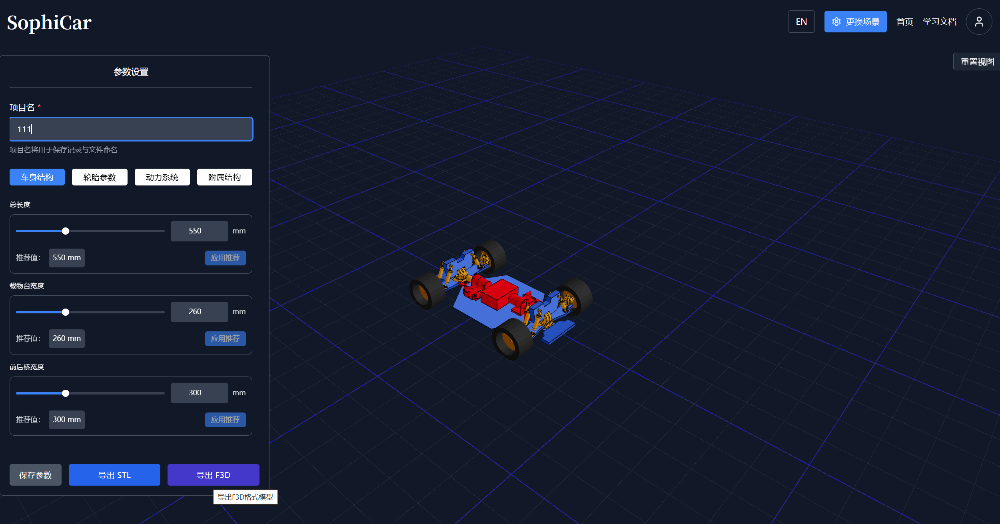
Step 2: Open Car Model in Fusion 360
Open the exported car model in Fusion 360 for further editing and customization.
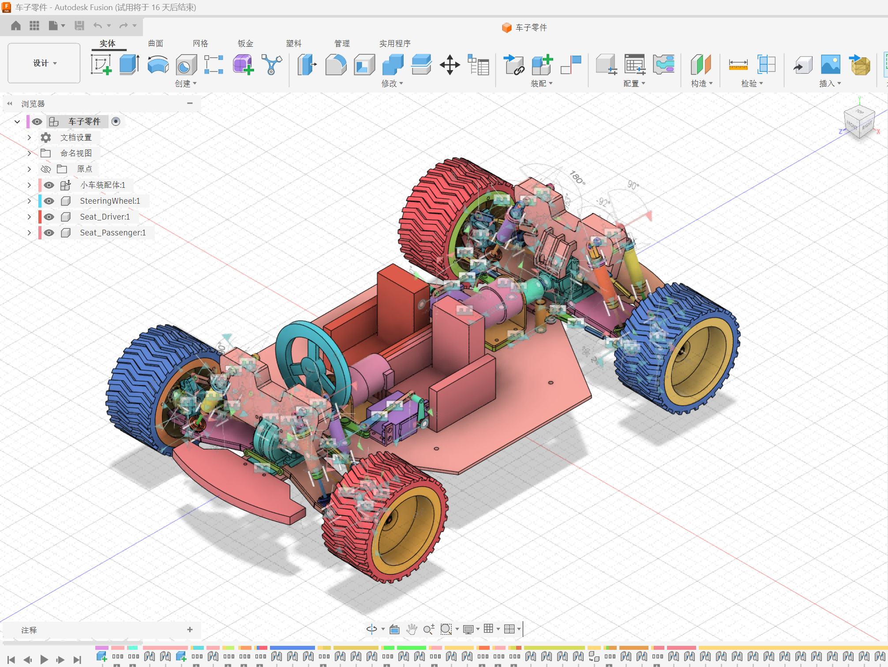
Step 3: AI Prompt Writing and Part Generation Process
Use Autodesk Assistant AI to generate custom parts by writing specific prompts with dimensions and positions.

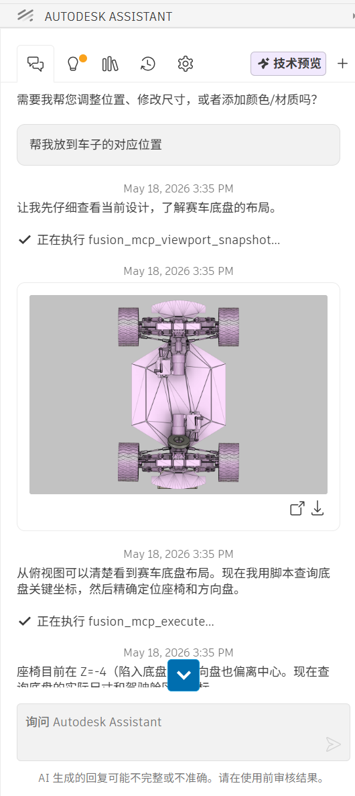
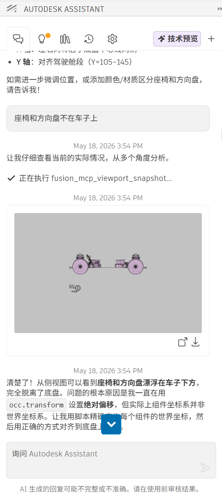

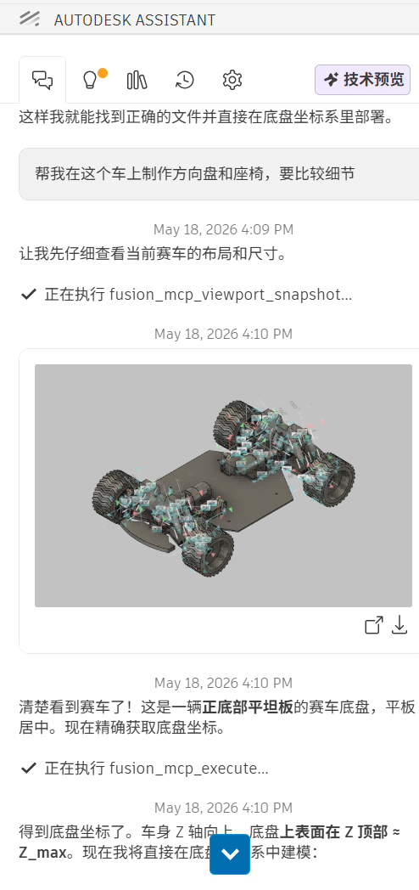


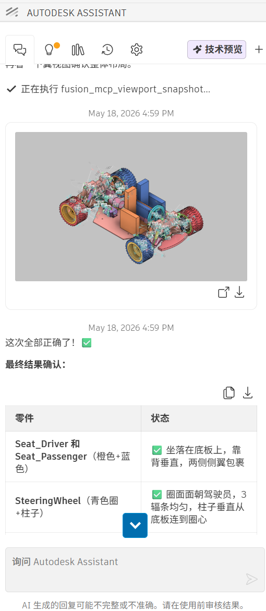
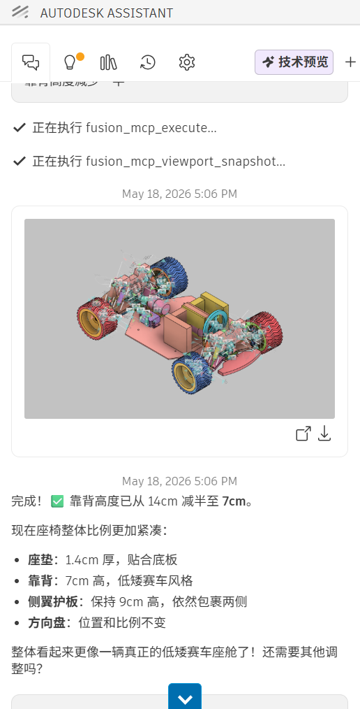

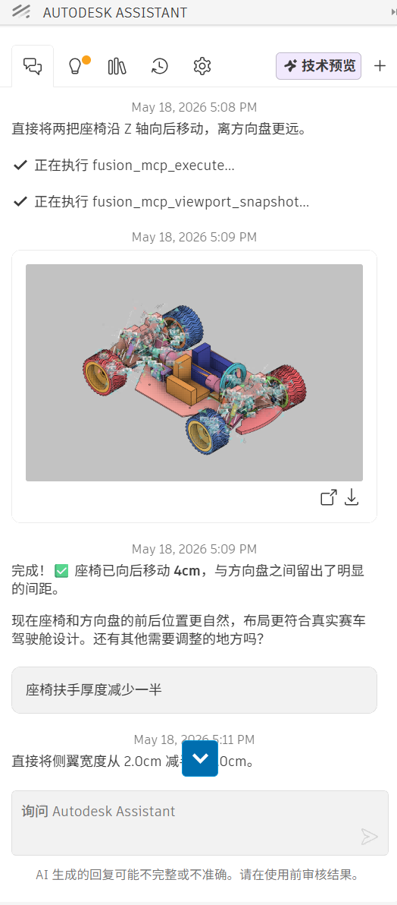
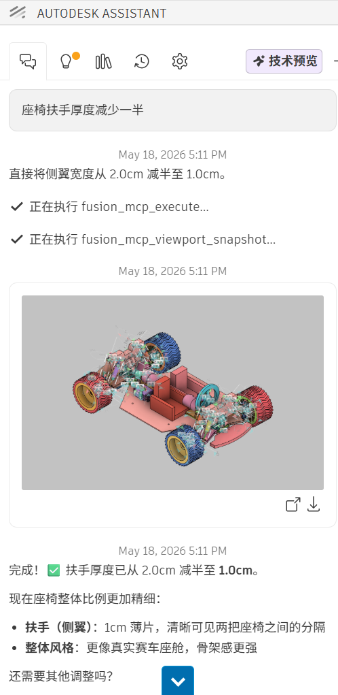
By writing prompts to AUTODESK ASSISTANT, we created two parts: a steering wheel and a car seat. Specific positions and dimensions were specified to facilitate later modifications. I shortened the seat length and reduced the armrest thickness, finally completing the part creation.
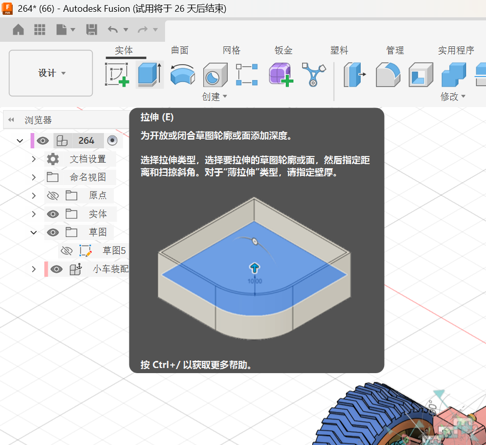

GIF Animation Demonstration

Step 4: Download Models from Autodesk Community Gallery
Log in to https://www.autodesk.com/community/gallery website to find required models.
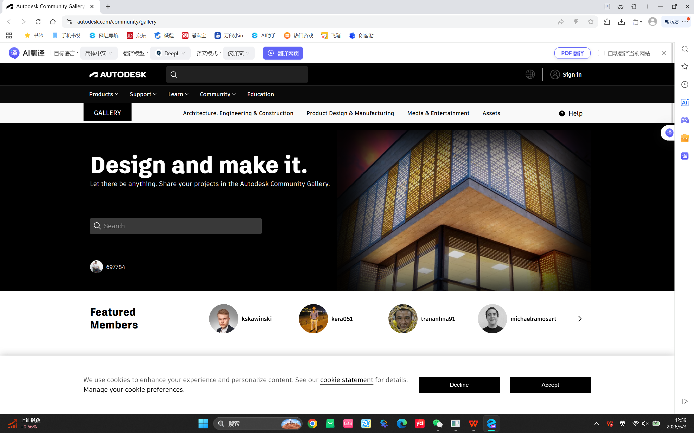
Search using English keywords.
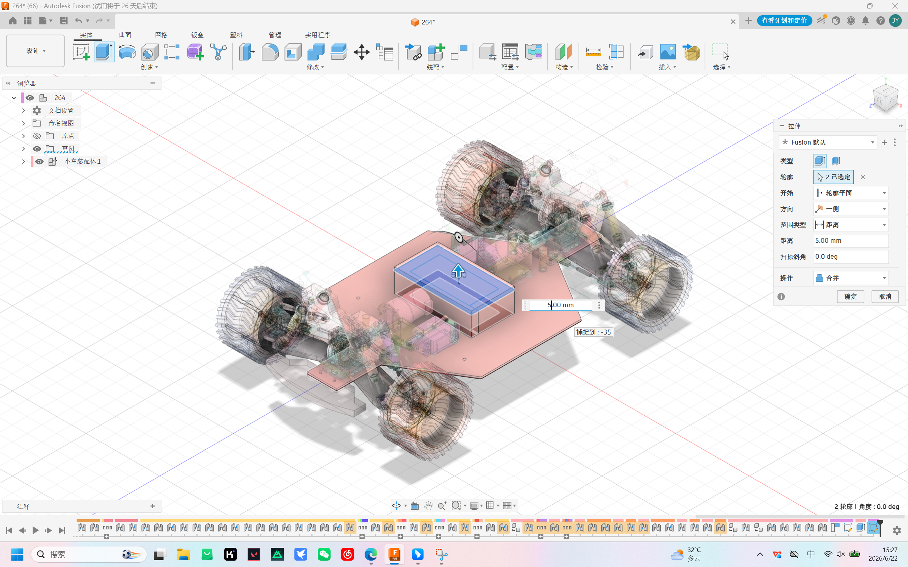
After finding and confirming the desired model, click "download model".
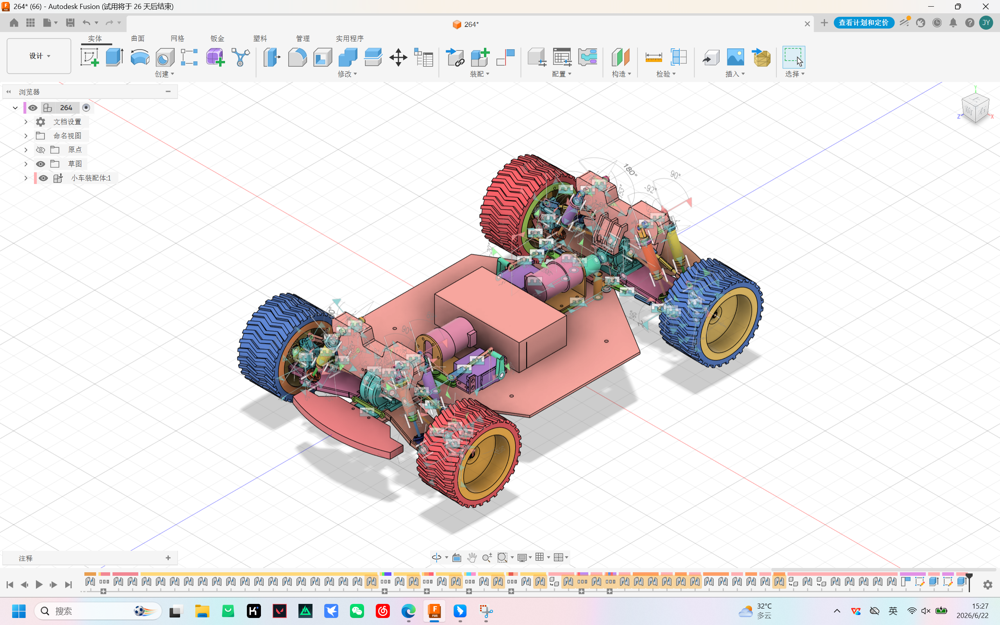
Open in Fusion 360 and perform debugging/adjustments.

Final Effect GIF Animation

Summary
Through this exercise, we learned:
- How to export F3D models from SophiCar website to Fusion 360
- Using Autodesk Assistant AI to generate custom parts with specific prompts
- Specifying precise dimensions and positions for easy modification
- Downloading and importing models from Autodesk Community Gallery
- Opening and debugging downloaded models in Fusion 360
- Creating customized steering wheel and car seat parts